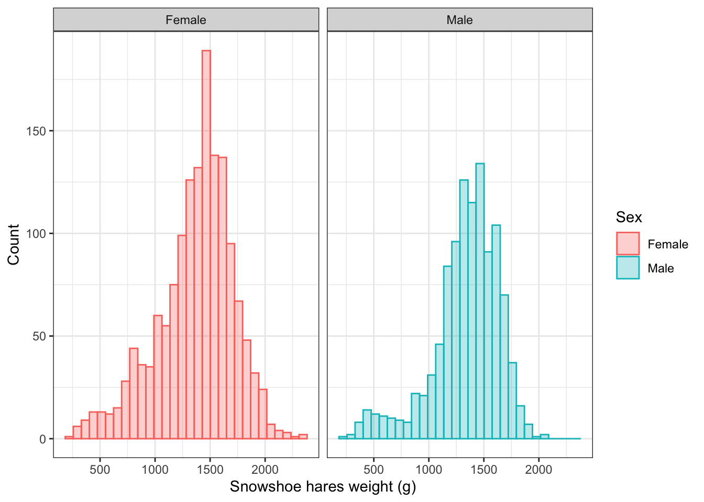
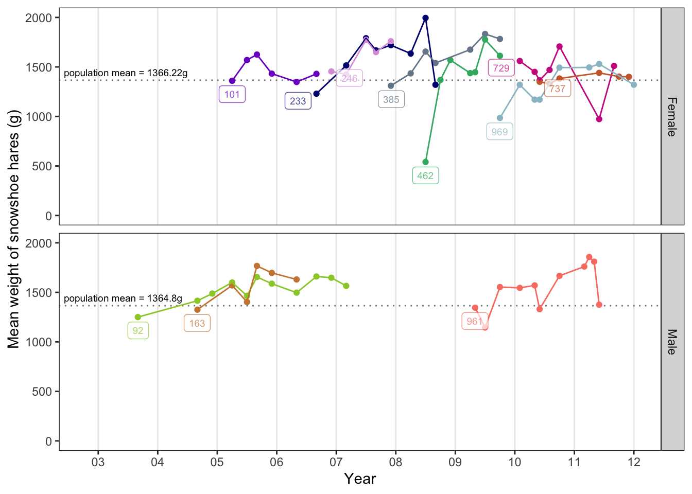

Snowshoe hares in Alaska
Shuhan Song
1/25/2020
Introduction
The snowshoe hares (Lepus americanus), named after its big hind feet, is a keystone prey species in northern boreal forests in North America. They are shy and secretive and prefer habitats with a dense shrub layer. The rabbits active year-round and turn their fur white during the winter and rusty brown during the summer for camouflage.

Snowshoe hares in winter

Snowshoe hares in summer
Picture in winter was downloaded from Cottage Life. The one in summer was from Montana Public Radio.
Data Source and Method
I used capture-recapture data of snowshoe hares at five locations in the Bonanza Creek Experimental Forest of Tanana Valley, Alaska to explore how the weight of snowshoe hares is related to sex and changed with time. The data was provided by Bonanza Creek LTER and its time scale ranged from 1999 to 2012, where Snowshoe hares densities peaked in 1999 then declined (Kielland et al. 2017). I looked at the distribution and summary table of weight from 1999 to 2012 and track the weight of 11 individuals captured-recaptured more than 15 times.

Made from Google Earth Engine on Feb. 4, 2020.
Result
# read in snowshoe data
snowshoe <- read_csv(here::here("data", "showshoe_lter.csv"))# look at the data
skim(snowshoe)
# "weight" had 535 NA, "sex" had 352 NA, while "hindft" had 1747 and "age" had 2111. "Hindft" and "age" had too many missing values so I will focus on exploring snowshoe hares "weight" and "sex".
unique(snowshoe$sex)
# better to exclude observations that were uncertain about sex.# clean up sex column
snowshoe_clean <- snowshoe %>%
filter(sex %in% c("M", "m", "F", "f")) %>%
mutate(sex = str_to_lower(sex)) %>%
filter(b_key != 285) # 285 was identified as pregnant male, a wrong observation
# snowshoe_clean has 2923 observations, filtering "sex" column did not have big impact on sample size.
# Change the "m" to "Male" and "f" to "Female" for better visualization
snowshoe_clean$sex[snowshoe_clean$sex == "f"] <- "Female"
snowshoe_clean$sex[snowshoe_clean$sex == "m"] <- "Male"The distributions of snowshoe hares weight from 1999 to 2012 were plotted for both males and females (Figure 1).
ggplot(data = snowshoe_clean, aes(x = weight)) +
geom_histogram(aes(color = sex, fill = sex), alpha = 0.3) +
facet_wrap(~sex) +
theme_bw() +
labs(color = "Sex",
fill = "Sex",
x = "Snowshoe hares weight (g)",
y = "Count") 
Figure 1: Distributions of snowshoe hares weight for males and females (1999-2012). The weight of snowshoe hares were normally distributed and peaked around 1500g for both sex. There were slightly more females (red) than males (green). Data source: Bonanza Creek LTER
# summary table of snowshoe hares' weight for both sex
weight_summary <- snowshoe_clean %>%
group_by(sex) %>%
summarize(mean = round(mean(weight, na.rm = TRUE), 2),
median = round(median(weight, na.rm = TRUE), 2),
stdv = round(sd(weight, na.rm = TRUE), 2),
count = n()
)I summarized the means, medians, standard deviations, and number of observations of weight of snowshoe hares for females and males (Table 1). On average, males weighted sligthly less than females.
Table 1: Summary of snowshoe hares weight for males and females (1999-2012). The weight of female snowshoe hares (mean = 1367.43, sd = , n = 1716) did not differ much from males (mean = 1339.57, sd = , n = 1207). Data source: Bonanza Creek LTER
kable(weight_summary,
col.names = c("Sex", "Mean (g)", "Median (g)", "Standard Deviation (g)", "Sample Size")) %>%
kable_styling(bootstrap_options = "striped",
position = "center",
full_width = FALSE)| Sex | Mean (g) | Median (g) | Standard Deviation (g) | Sample Size |
|---|---|---|---|---|
| Female | 1367.43 | 1420 | 345.68 | 1716 |
| Male | 1339.57 | 1380 | 305.13 | 1207 |
Track individuals
# get the unique identifiers for individuals that were recaptured for at least 20 times
snowshoe_id <- snowshoe_clean %>%
count(b_key) %>%
filter(n > 15) %>%
arrange(desc(n))
# filter out the above individuals
snowshoe_track <- snowshoe_clean %>%
filter(b_key %in% c(unique(snowshoe_id$b_key)))# look at the data
skim(snowshoe_track)
# nearly 2/3 of the "age" and "hindft" data was absent. While there were 50 NAs for "weight", no data was missing for "date" and "sex". Therefore, it's reasonable to track the weight of these individuals through time.# parse date
snowshoe_trck_parse_date <- snowshoe_track %>%
drop_na(weight) %>%
separate(date, into = c("month", "day", "year"), sep = "/") # separate year and month from "date"There were 11 individuals with more than 15 observations that were tracked. The corresponding time range spanned from 2003 to 2011. Mean weights were calculated for observations in months and years when the 11 individuals were captured/recaptured. The trend of changes in mean weight goes relatively consistent in either gender groups, especially for Male #163 and #92, Female #246 and #233, and Female #969, #737 and #729 (except year 2011) (Figure 2). Most of the 11 individuals weighted more than the population means at various time spots of sampling. In general, most of the 11 individuals had their weights increased when they were recaptured. The results could have represented a survivor bias where individuals couldn’t live well had a lower chance of being recaptured.
# prepare data to plot tracking of the individuals
snowshoe_trck_wt <- snowshoe_trck_parse_date %>%
group_by(b_key, year, month, sex) %>%
summarize(mean = round(mean(weight, na.rm = TRUE), 2)) %>% # calculate the mean weight for observations in each month
mutate(time = as.numeric(year) + as.numeric(month)/12 ) %>% # change time scale to years
ungroup() %>%
group_by(b_key) %>%
mutate(label = if_else(time != min(time), "NA", as.character(b_key))) %>% # create label for each individual
na_if("NA") %>%
arrange(desc(sex))
# add population mean weight (2003-2011) to the tracking plot
weight_summary_trck <- snowshoe_clean %>%
separate(date, into = c("month", "day", "year"), sep = "/") %>%
filter(year %in% c("03", "04", "05", "06", "07", "08", "09", "10", "11")) %>%
group_by(sex) %>%
summarize(mean = round(mean(weight, na.rm = TRUE), 2)) %>%
mutate(label = as.character(str_glue("population mean = {mean}g"))) # add lable to the summary table ggplot(data = snowshoe_trck_wt, aes(x = time, y = mean)) +
geom_hline(data = weight_summary_trck,
aes(yintercept = mean),
color = "gray50",
linetype = "dotted",
show.legend = FALSE) + # add horizonal line of populaiton mean
geom_point(aes(color = as.factor(b_key)),
show.legend = FALSE) +
geom_line(aes(color = as.factor(b_key),
group = as.factor(b_key)),
show.legend = FALSE) +
facet_grid(sex~.) +
scale_x_continuous(limits = c(2.8, 12),
breaks = c(3, 4, 5, 6, 7, 8, 9, 10, 11, 12),
labels = c("03", "04", "05", "06", "07", "08", "09", "10", "11", "12")) + # change breaks and labels of x axis to represent the year
scale_y_continuous(limits = c(0, 2000)) +
scale_color_manual(values = c("purple3", "tan3", "navy", "plum", "lightslategrey", "mediumseagreen", "maroon3", "sienna3", "yellowgreen", "salmon", "lightblue3", "darkred", "brown1", "paleturquoise2")) + # set color of snowshoe hares points and lines
geom_label_repel(aes(label = label,
color = as.factor(label)),
nudge_y = -5,
alpha = 0.7,
size = 2.5,
na.rm = TRUE,
show.legend = FALSE) + # add label for each individuals
geom_text_repel(data = weight_summary_trck,
aes(x = 3,
y = mean,
label = label),
nudge_y = 80,
nudge_x = -5,
segment.colour = NA,
size = 2.5,
na.rm = TRUE,
show.legend = FALSE) + # add label for population means
labs(x = "Year",
y = "Mean weight of snowshoe hares (g)") +
theme_bw() +
theme(panel.grid.minor.y = element_blank(),
panel.grid.major.y = element_blank(),
panel.grid.minor.x = element_blank())
Figure 2: Track 11 individual’s weight of snowshoe hares for both males and females (2003-2011). The graph included 8 females and 3 males that had more than 15 capture-recapture records and labeled their unqiue animal identifiers in boxes. The population means (2003-2011) for males and females were plotted as dotted line and had the value labeled. Most indivduals in this subset weighted more than the population averages. Data source: Bonanza Creek LTER
Reference
Kielland K., F. S. Chapin, R. W. Ruess. 2017. Snowshoe hare physical data in Bonanza Creek Experimental Forest: 1999-Present. Environmental Data Initiative. https://doi.org/10.6073/pasta/03dce4856d79b91557d8e6ce2cbcdc14.